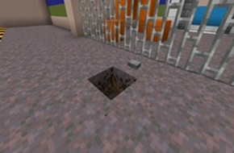
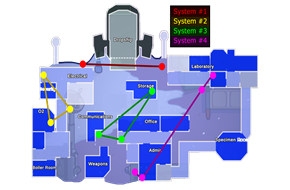
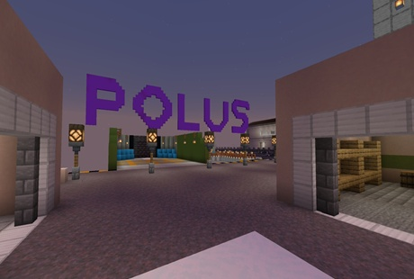
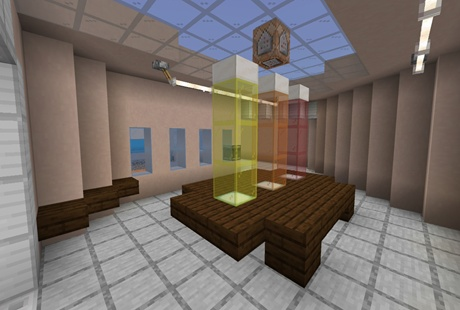
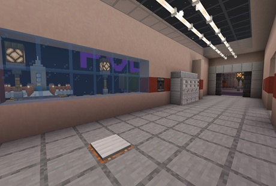
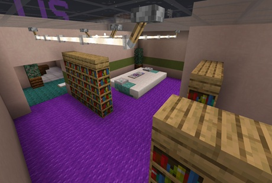

マップ「Polus」についての解説
このマップはAmong usのマップ「Polus」を再現したマップで中人数以下におすすめなマップです。
このマップは主に建物内と外に分かれており、建物内にはハイドスポットがいくつも存在して奇襲が可能です。
また死角が多いので気を付ける必要があります。外エリアでは建物の上に上がることができエリア全体が見下ろせます。
基本的に上をとるのが強いので意識してみましょう。
特殊ギミック「ベント」
このマップには実際にAmong usにある「ベント」というギミックがあります。
ボタンを押すと対応した場所にテレポートします。
上手く利用して相手の隙を突こう。

ベントはすべてのベントにアクセスはできません。
ベントの場所、経路はこちらの図で確認してください。
※画像クリックで大きく表示されます。

こちらはPolusの参考写真です。



